VMWare Instalación de la máquina virtual¶
Note
| Fecha | Autor |
| 2014-03-31 |
|
©2014 Geoinquietos Valencia
Excepto donde quede reflejado de otra manera, la presente documentación se halla bajo licencia : Creative Commons (Creative Commons - Attribution - Share Alike: http://creativecommons.org/licenses/by-sa/4.0/)
La formación se va a realizar en una máquina virtual. Para ello se utilizará un software de virtualización, que se encargará de hospedar la máquina virtual.
Para el caso que nos ocupa emplearemos la máquina virtual versión 7.0 de OSGeo Live dentro del software de virtualización VMWare Player.
Los pasos necesarios para esto son:
- Descarga e instalación de VMWare player.
- Descarga de OSGeo Live.
- Configuración de la máquina virutal
En la terminología de los software de virtualización, la máquina real es la anfitriona, host en inglés; mientras que la máquina virtual es la huésped, o guest en inglés.
Descarga e instalación de VMWare Player¶
El primer paso es descargar el software de la página de descargas de VMWare y proceder a su instalación.

El resultado de esta descarga debe ser un fichero con un nombre parecido a VMware-Player-6.0.1-1379776.x86_64.bundle o VMware-player-6.0.1-1379776.exe en función del sistema operativo seleccionado.
Instalación en GNU/Linux (Debian)¶
Al tratarse de un archivo binario, deberán cambiarse los permisos para poder ejecutar la instalación:
$ chmod +x VMware-Player-6.0.1-1379776.x86_64.bundle
Y deberemos ejecutarlo con permisos de superusuario:
$ sudo ./VMware-Player-6.0.1-1379776.x86_64.bundle
y usar las opciones por defecto para la instalación.
Instalación en Windows¶
Ejecutaremos el archivo .exe y usaremos las opciones por defecto para la instalación.
Descarga de OSGeo Live¶
Para descargar la versión 7.0 de la máquina virtual deberemos visitar la sección correspondiente de la web Sourceforge y proceder a la descarga del archivo .7z [1].
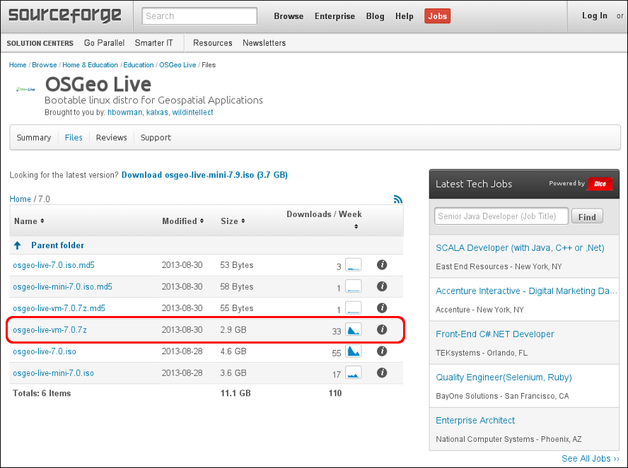Descompresión del archivo en GNU/Linux¶
Para descomprimir el archivo emplearemos el comando:
$ 7z e osgeo-live-vm-7.0.7z
Descompresión del archivo en Windows¶
Si hemos instalado la aplicación 7-Zip File Manager al hacer doble click sobre el archivo descargado nos mostrará una ventana de aplicación con la que podemos seleccionar Extraer y después indicarle a la aplicación en qué directorio queremos descomprimir el archivo.
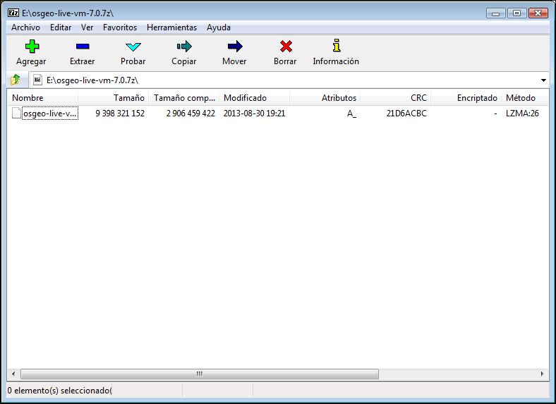También es posible descomprimir el archivo usando la aplicación WinRAR.
Configuración de la máquina virtual¶
La máquina virtual se ejecuta dentro del programa VMWare Player que hemos instalado con anterioridad, por lo que arrancaremos dicho programa
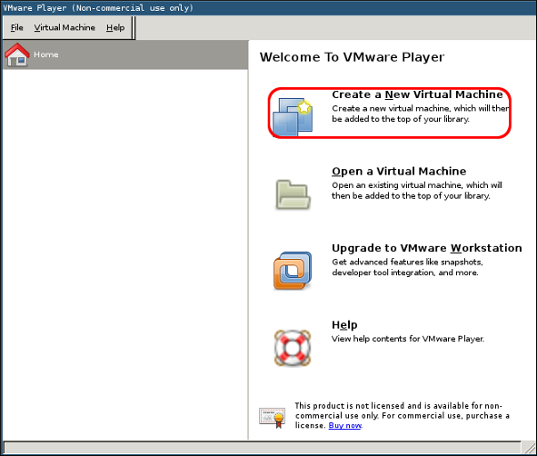Seleccionaremos la opción Create a New Virtual Machine.
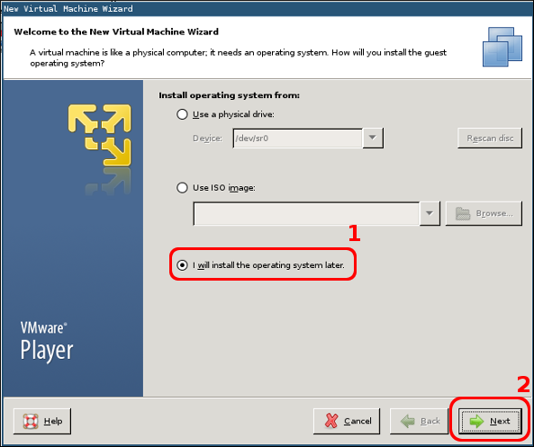Seleccionamos I will install the operating system later

Seleccionamos Guest Operating System: Linux y Version: Ubuntu
A continuación deberemos darle un nombre a la máquina virtual y seleccionar una ubicación en disco en la que almacenarla.
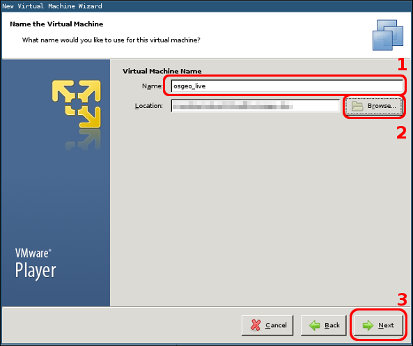Seleccionamos el nombre de la máquina y cuál será su localización en disco. El nombre de la máquina osgeo_live y el destino de la máquina aparece difuminado.
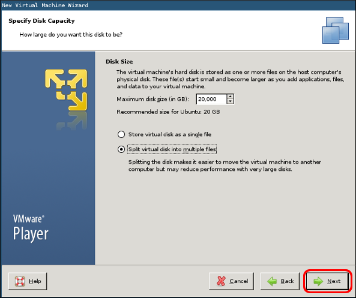La aplicación nos solicitará que seleccionemos la capacidad del disco. En realidad no usaremos el disco que configure la máquina virtual, por lo que podemos dejar las opciones por defecto.
Seleccionamos la configuración del disco duro: Split virtual disk into multiple files
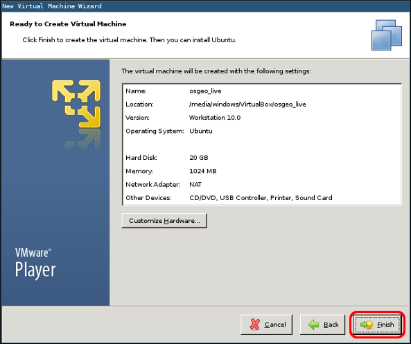Pulsaremos Finish
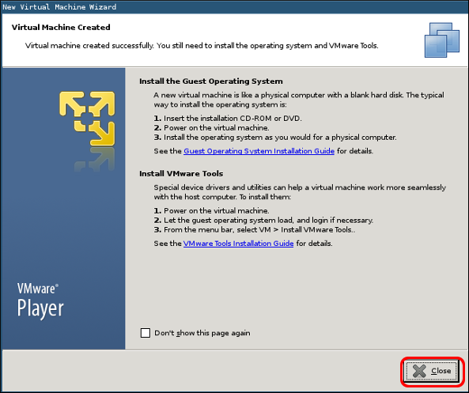Pulsaremos Close
Tenemos la máquina virtual creada pero hay que configurarla para que use el disco que nos hemos descargado.

Seleccionamos la máquina osgeo_live y a continuación pulsamos Edit virtual machine settings

Seleccionaremos el disco duro creado por defecto Hard Disk (SCSI) y lo eliminaremos.
Seleccionar Hard Disk (SCSI) y después pulsar Remove
Ahora añadiremos el disco virtual que nos hemos descargado de Sourceforge y hemos descomprimido.

Pulsar Add...

Seleccionar Hard Disk y pulsar Next

Dejaremos la opción por defecto SCSI
Pulsar Next
El nuevo disco ya existe por lo que hay que seleccionar la opción Use an existing virtual disk
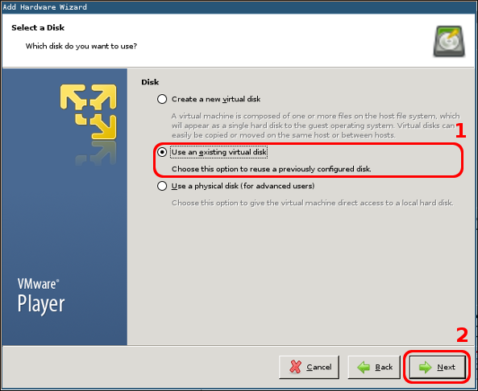Seleccionar Use an existing virtual disk y pulsar Next

A continuación pulsaremos Browse y buscaremos el lugar dónde hemos descomprimido el archivo descargado de Sourceforge. En la imagen podemos ver que la casilla ha sido difuminada.
Seleccionar el disco que hemos descomprimido y pulsar Finish
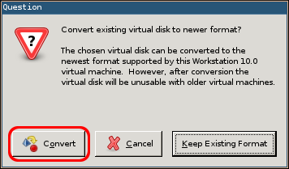Es posible que la aplicación nos solicite información sobre la ejecución de una actualización de versión del disco virtual. La opción de convertirlo es completamente opcional por lo que nos podemos saltar este paso. Para convertirlo deberemos seleccionar la opción Convert.
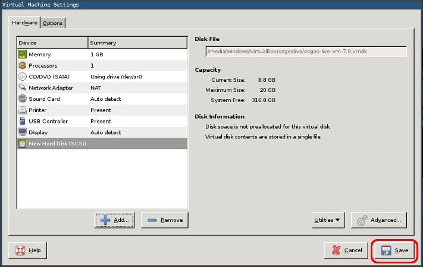Solo restará guardar la configuración de la máquina virtual pulsando Save
Y ejecutar la máquina virtual con la opción Play virtual machine

Seleccionamos osgeo_live y pulsamos Play virtual machine
| [1] | 7-Zip es un gestor de archivos comprimidos Open Source y multiplataforma que usa de manera nativa el formato de archivo 7z aunque puede trabajar con muchos otros. Puede instalarse por paquetes o descargarse de http://www.7-zip.org |